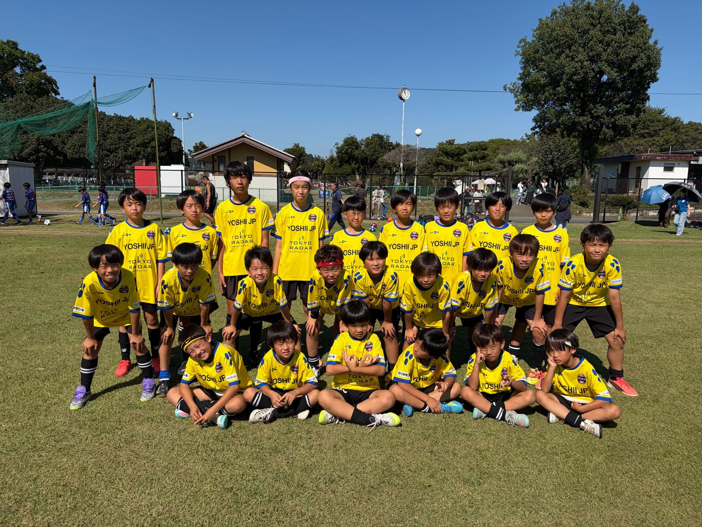
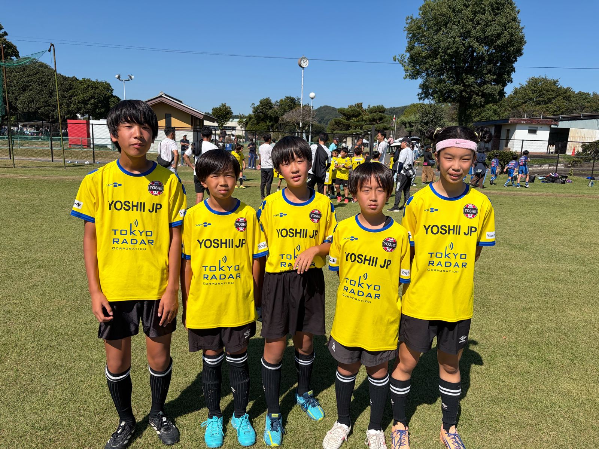
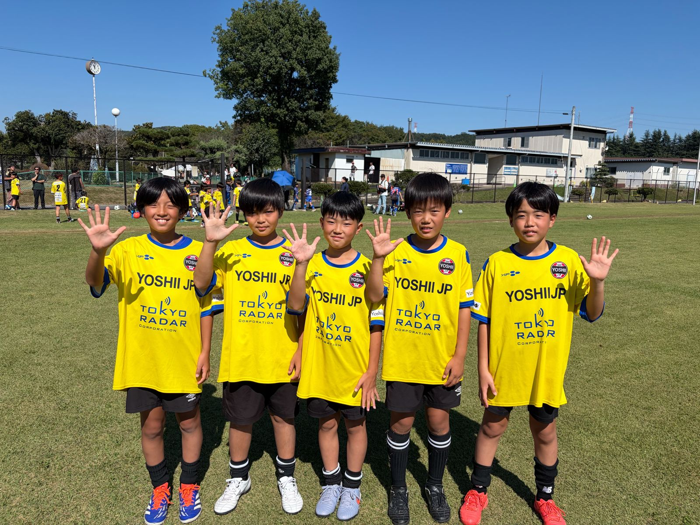
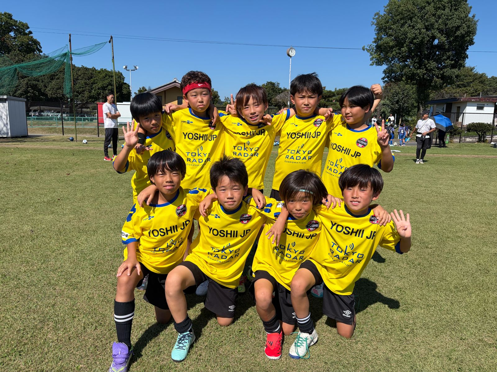
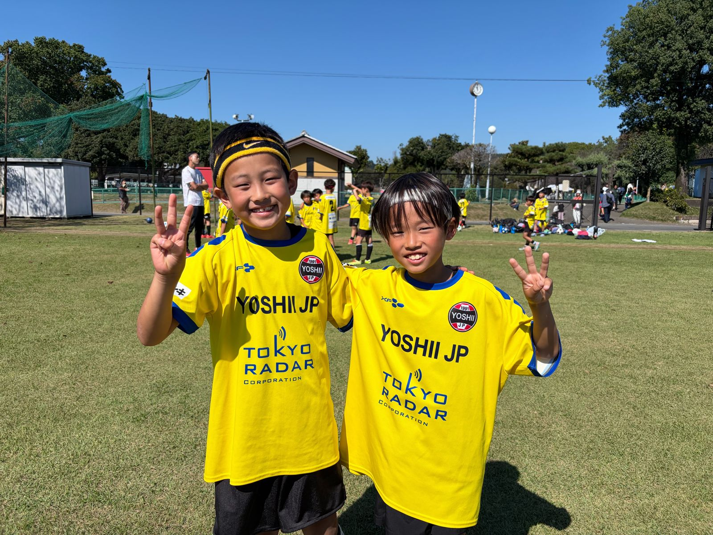
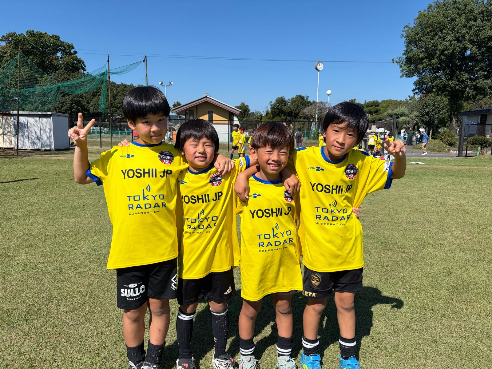

写真
監督
横尾 千明
「サッカーを通じて人を育てる」を大切に、子どもたちの技術と心を育てています。
高崎市吉井町を中心に活動している、少年少女のサッカーチームです。「サッカーを通じて人を育てる」ことを目的とし、技術と心を磨いています。
「パルス（PULSE）」は、英語で「鼓動」「脈拍」「衝動」といった意味を持ち、子どもたちの生き生きとした心臓の鼓動や、サッカーに対する情熱・胸の高鳴りを表して名付けられた一般的なスポーツチームの名称の由来に共通しています。

学年ごとの集合写真です。タブを切りかえて見てください。





※選手の名前や写真は、保護者の方の了承を得たものだけを掲載しています。
JFA公認C級・D級の資格を持つ指導者をはじめ、ゴールキーパーコーチや保護者コーチなど、子どもたちの機微をよく知るメンバーが多数そろっており、指導体制も整っています。
「サッカーを通じて人を育てる」を大切に、子どもたちの技術と心を育てています。
天候などで変更になる場合があります。最新情報は連絡網でお知らせします。
| 曜日 | 時間 | カテゴリー・場所 |
|---|---|---|
| 火曜日 | 18:45〜20:45 | ナイター練習（全学年） 吉井西小学校 |
| 金曜日 | 18:45〜20:45 | ナイター練習（全学年） 吉井西小学校 |
| 土・日曜日 | 9:00〜12:00 | 主に試合 吉井総合運動公園・吉井西グランドほか各会場 |
土日の試合や団行事の予定は、Instagramとチームの連絡網でお知らせしています。
下のボタンをタップすると、チームのアカウントがすぐに開きます。
Instagram @yoshii.jp を開く →練習や試合のようすをお届けします。
練習や試合、団行事のようすを写真で発信しています。下のボタンをタップすると、チームのアカウントがすぐに開きます。
高崎市吉井町で少年サッカーチームをお探しの保護者の方から、よくいただく質問です。
ふだんの練習は火曜・金曜の18:45〜20:45に、高崎市吉井町の吉井西小学校で行っています。土日は吉井総合運動公園や吉井西グランドなどで、主に試合をしています。
はい、大歓迎です。幼児・小学生の男の子も女の子も、経験がなくても一緒に練習しています。体験はいつでも参加できます。
1〜3年生は月1,500円、4〜6年生は月2,000円です。
保護者会やお茶当番などの負担は一切ありません。
メール（yoshiijp.soccer@gmail.com）またはInstagram（@yoshii.jp）で、お子さんの名前・学年・体験希望日をお知らせください。
高崎市吉井町で少年サッカーを始めたいお子さまを募集しています。
サッカーがはじめての子も大歓迎。まずは体験に来てみてください。